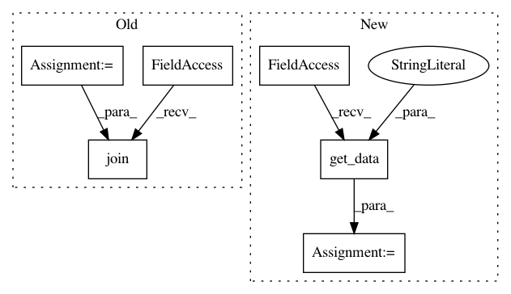

80ab54273ad5bc35f915cea36d99d52a04f1d5f6,src/python/pants/backend/jvm/tasks/coverage/cobertura.py,Cobertura,instrument,#Cobertura#Any#Any#Any#Any#,76
Before Change
def instrument(self, targets, tests, compute_junit_classpath, execute_java_for_targets):
instrumentation_classpath = self.initialize_instrument_classpath(targets)
junit_classpath = compute_junit_classpath()
cobertura_cp = self._settings.tool_classpath("cobertura-instrument")
aux_classpath = os.pathsep.join(relativize_paths(junit_classpath, get_buildroot()))
safe_delete(self._coverage_datafile)
files_to_instrument = []
for target in targets:
if self.is_coverage_target(target):
After Change
def instrument(self, targets, tests, compute_junit_classpath, execute_java_for_targets):
// Setup an instrumentation classpath based on the existing runtime classpath.
runtime_classpath = self._context.products.get_data("runtime_classpath")
instrumentation_classpath = self._context.products.safe_create_data("instrument_classpath", runtime_classpath.copy)
self.initialize_instrument_classpath(targets, instrumentation_classpath)
cobertura_cp = self._settings.tool_classpath("cobertura-instrument")
In pattern: SUPERPATTERN
Frequency: 3
Non-data size: 6
Instances
Project Name: pantsbuild/pants
Commit Name: 80ab54273ad5bc35f915cea36d99d52a04f1d5f6
Time: 2015-12-09
Author: justin.trobec@gmail.com
File Name: src/python/pants/backend/jvm/tasks/coverage/cobertura.py
Class Name: Cobertura
Method Name: instrument
Project Name: pantsbuild/pants
Commit Name: 709597d36240d32d9047afe8d0b257518294c1ae
Time: 2015-07-09
Author: stuhood@gmail.com
File Name: src/python/pants/backend/jvm/tasks/jvm_compile/jvm_compile_isolated_strategy.py
Class Name: JvmCompileIsolatedStrategy
Method Name: _write_to_artifact_cache
Project Name: pantsbuild/pants
Commit Name: b808d8f7cbe45d82fbf5a6417d09c50d6fa5e130
Time: 2016-01-15
Author: wangpeiyu@gmail.com
File Name: src/python/pants/backend/jvm/tasks/bundle_create.py
Class Name: BundleCreate
Method Name: bundle